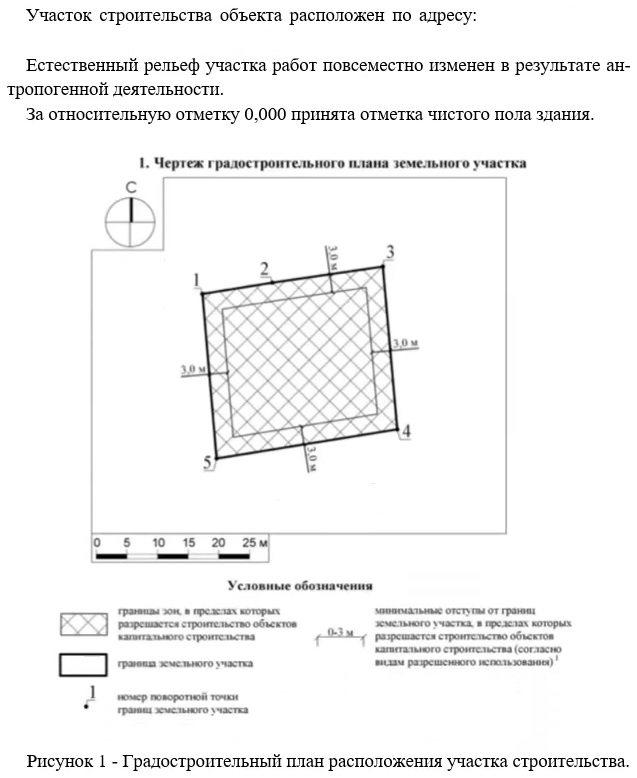
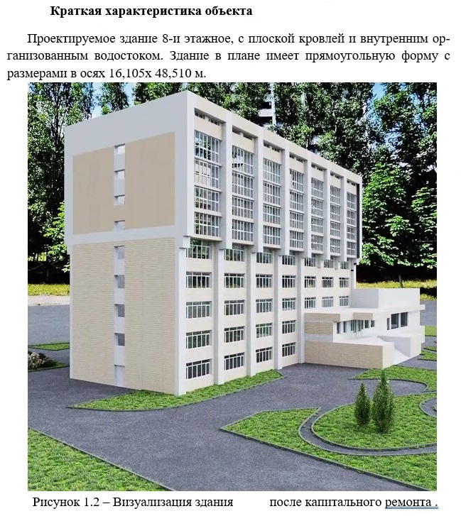
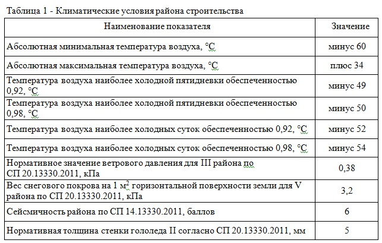

Административное положение и климатические условия
Краткая характеристика объекта
Здесь приводится общая характеристика объекта и его назначения.

- Указываются тип и категория объекта, стадия проектирования и строительства.
- Определяются границы участка и зона ответственности по объекту.
- Приводится информация о близких объектах и влиянии на соседние территории.
- Описываются специфические требования к инфраструктуре на объекте (если есть).
- Указываются ограничители по времени и сезонности работ. (если это влияет)
- Приводится схема логистики и размещения площадок для хранения материалов.
Желательно включать схемы участка, планы расположения и внешний облик объекта.

Все графические материалы лучше представлять единым комплектом.
Климатические условия строительства
Данный раздел может входить в состав раздела «исходные данные» или быть отдельным разделом.
Мы также включаем описание климатических условий и необходимых схем. Получить данные о климате легко, достаточно определить географическое положение объекта и воспользоваться поиском в интернете. Зачастую подобная информация содержится в проекте организации строительства (ПОС), если таковой имеется в распоряжении разработчика ППР.
- Климатические условия напрямую влияют на режимы работ и сроки.
- Приводятся базовые климатические данные по региону и объекту.
- Учитываются сезонные колебания: температура, осадки, влажность.
- Влияние ветра на безопасность выполнения высотных и подвижных работ.
- Температура влияет на схватывание и прочность бетона, смазку и электроинструменты.
- Влажность и осадки — на работу с грунтом, огнеупорными изделиями, деревом.
- Необходимы методы защиты оборудования и материалов от погодных условий.
- Определяются сроки и условия для сезонного монтажа и демонтажа временных конструкций.
- Учитываются требования к хранению материалов в условиях влажности и мороза.
- Указываются нормируемые допустимые отклонения по измерениям при различной погоде.

Для заполнения данный о климатических условиях, принимаются следующие нормативные документы:
- СП 131.13330.2025 «Строительная климатология»
- СП 20.13330.2016 «Нагрузки и воздействия»
- СП 14.13330.2018 «Строительство в сейсмических районах»